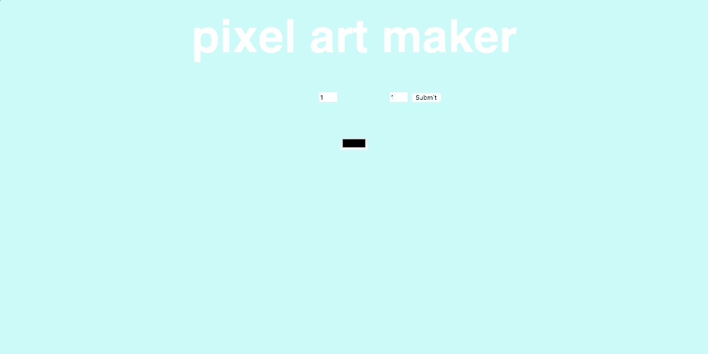

I'm MK, a Front-End Web Developer.

Featured Projects
Matching Game

HTML5, CSS3, jQuery
Pixel Art Maker
HTML5, CSS3, Javascript
Design Portfolio

Custom updates to Squarespace theme
LTC & Associates

HTML5, CSS3, vanilla JS, jQuery
About Me
My previous career as an apparel Product Developer provided me with expertise in Adobe Creative Suite, Visual Communication and Color Design. I built on this foundation by completing Harvard's CS50x, FreeCodeCamp's Front End Developer Certificate and Udacity's Front End Web Developer Nanodegree. I utilize my prior professional skills and project-based programming knowledge to create beautiful, responsive and interactive websites.
- HTML5
- CSS3
- Javascript
- jQuery
- Bootstrap
- Git
- Github
- Terminal
- Responsive Design
- Cross-browser Adaptability
- Photoshop
- Illustrator
- InDesign
- eCommerce
- Graphic Design